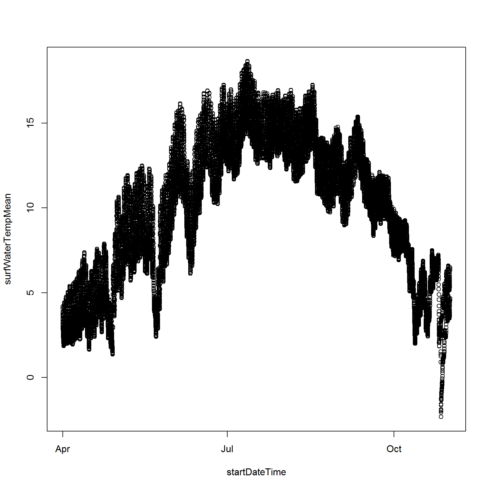

Chapter 2. Intro to R and RStudio
Overview
Why should you learn how to use R?
Because it can do almost anything you need as a scientist:
R can:
- do computations
- manipulate data
- access files on your computer or the internet
- make graphs
- create documents
- create apps
- almost anything… though it is not always the best tool for every job.
R is widely used in the scientific community and will always be free to use. R is also open source- this means that anyone can see, modify and distribute the code for the program. The fact that R is open source means that thousands of users have contributed add-on packages that increase the functionality of the base R program. If there’s an analysis you want to do or a graph you want to make, someone has probably made a package for it. All you have to do is find it and use it.
R also makes it easier to practice open science by making your scientific analyses transparent and reusable. This is because analyses are saved as code rather than a series of clicks through a user interface (like spreadsheet software). If you share this code and your data with someone, they will be able to reproduce your analyses with a single click.
We’re going to learn some of the fundamentals of the R programming language and writing our first code script. We’ll be using RStudio: a free, open-source R Integrated Development Environment (IDE). It provides a built-in editor, works on all platforms (including on servers) and provides many advantages such as integration with version control and project management. We’ll learn some of the basics for working with R code in RStudio.
What we will learn
In this lesson learners will:
- discover why so many scientists use R
- describe the contents of the windows in an RStudio session
- install and load packages in R
- write and save a code script in a project folder
- read and view tabular data from a file
- use the console for mathematical calculations
- state the rules for assigning variables
- work with vectors
- learn how to get help and troubleshoot error messages
Key Terms & Commands
- command line
- GUI (graphical user interface)
- script
- function and argument
- vector
- warnings vs. errors
- ways to make vectors:
c(),seq(),:, andrep() - variable assignment:
<-and= help()or?ls()andrm()read.csv()getwd()andsetwd()$head(),nrow(),ncol()andnames()range(),mean(), andtable()
Prerequisites
Check that you have the latest version of R and RStudio installed on your machine. This is important, as some packages may not install correctly (or at all) if R is not up to date. For instructions on installing (or updating) R and RStudio, please see Computer Setup.
Once R and RStudio are installed, you will also need to set up the Student Workbook that accompanies this text as an RStudio project. Instructions are in the first exercise from Navigating your computer.
Lesson
Welcome (back) to RStudio!
In Computer navigation we used RStudio to learn how to work with files on a computer, but didn’t really learn much about what RStudio actually is or how it is related to the R program.
Let’s clarify the difference between R and RStudio:
- R is a program that you installed on your computer that allows you to write code in the R programming language.
- R is a command-line program that executes code one line at a time to produce output (more on this later).
- R code is usually written and saved in files called scripts which you can customize to do almost anything.
- RStudio is a program that allows you to write R code and test it out at the same time (which is why it is called an integrated development environment). It provides a Graphical User Interface (GUI) that makes it easier to interact with R and develop R code.
We will start by opening the student workbook RStudio project that accompanies this text. To open an RStudio project, use your computer’s file browser to navigate to the R-course-NEON-workbook folder you downloaded. Inside this folder, double click on the R-course-NEON-workbook.Rproj file (see the lesson: Computer navigation)
Basic layout
When you first open RStudio, you will be greeted by three panels:
- The interactive R console/Terminal (entire left)
- Environment/History/Connections (tabbed in upper right)
- Files/Plots/Packages/Help/Viewer (tabbed in lower right)
If you opened the R-course-NEON-workbook project then your RStudio session should look like this:

If you’re having trouble seeing the different windows, RStudio has several accessibility features that allow you to change the size of text and simplify the layout. You may want to customize your setup now.
In Computer navigation we learned about the Terminal and File panels. In this lesson we’re going to start working in the R console to learn about some of the basic functionality of R. Notice that the Console and Terminal tabs share the same panel. R console and Console are used interchangeably to refer to the same panel. Once we start learning more complex code, we will open the Source panel and create an R script for saving the code that we write.
The first thing you will see in the R console is a bunch of information, followed by a “>” and a blinking cursor. This is a command-line interface; it reads and evaluates one line of code at a time, printing out any results of each line to the same console window as it goes. If you type in commands at the command line, R tries to execute them, and then returns a result.
For the first part of this lesson, you should type any code that you see in grey boxes into the command line in the R console and then press enter.
type this into the command lineThis document will show you the expected output of each command in a white boxes below like this:
[1] expected code outputOr, the expected output may show up directly below the line of code
and be preceded by a [1]:
type this into the command line
[1] expected code outputLet’s start by demonstrating some of the basic functionality of R.
What can R do?
As mentioned in the introduction, R can do almost anything, although it is not always the best tool for every job.
Arithmetic and calculations
The simplest thing you could do with R is to do arithmetic:
1 + 100[1] 101R will print out the answer, with a preceding “[1]” because this is the first line of output.
If you type in an incomplete command, R will wait for you to complete it. For example:
1 ++Any time you press Enter and the R session shows a “+” instead of a “>”, it means that the console is waiting for you to complete the command. You can either keep typing the rest of the command:
1 +
100[1] 101or cancel what you were doing. If you want to cancel a command you can type Esc and RStudio will give you back the “>” prompt.
Canceling a command isn’t only useful for stopping incomplete commands: you can also use it to tell R to stop running code (for example if it’s taking much longer than you expect), or to get rid of the code you’re currently writing.
When using R as a calculator, the order of operations is the same as you would have learned in math class.
From highest to lowest precedence:
- Parentheses:
(,) - Exponents:
^or** - Multiply:
* - Divide:
/ - Add:
+ - Subtract:
-
3 + 5 * 2[1] 13Use parentheses to group operations in order to force the order of evaluation if it differs from the default, or to make clear what you intend.
(3 + 5) * 2[1] 16Really small or large numbers get a scientific notation:
2/10000[1] 2e-04Which is shorthand for “multiplied by 10^XX”. So
2e-4 is shorthand for 2 * 10^(-4).
You can write numbers in scientific notation too:
5e3 [1] 5000R has many built in mathematical functions. To use a function, we can type its name, followed by open and closing parentheses (just like functions in math!). Functions take arguments as inputs- anything we type inside the parentheses of a function is considered an argument. Depending on the function, the number of arguments can vary from none to multiple. For example:
getwd() # returns an absolute file path of the current working directorydoesn’t require an argument, whereas for the next set of mathematical functions we will need to supply the function a value in order to compute the result.
sin(1) # trigonometry functions
[1] 0.841471log(1) # natural logarithm
[1] 0log10(10) # base-10 logarithm
[1] 1exp(0.5) # e^(1/2)
[1] 1.648721Some functions take multiple arguments that are separated by commas.
sum(1, 2, 3) # adds all numeric arguments together
[1] 6Did you notice the text at the end of each line of code above? This
text is called a comment because it is preceded by a
hash character (#). This character tells R to ignore
anything that comes after it on the same line. Since this text is not
evaluated we can use it to make notes about what the code does. You do
not need to type the comments into the command line to run the code.
What should be the output for each of these commands?
log(exp(3 + 3))
2e-1 + 5Solution:
log(exp(3 + 3))
[1] 6
2e-1 + 5
[1] 5.2What do the values NA and NULL mean?
Run each of these commands and try to guess what is happening.
sum(3, NA)
sum(3, NULL)Solution:
sum(3, NA)
[1] NA
sum(3, NULL)
[1] 3NA is a special placeholder value that means that data
is missing. NULL is a special value that means something
does not exist. Thus, arithmetic with NA will by default
give a NA result because missing values are values that we
may have tried to collect, but failed to do so. In contrast,
NULL values do not take up any space and are ignored by
default in calculations. We will learn later how to ignore missing
values in calculations.
Work with stored values in a computing environment
The first step toward writing code is to store values for use later.
We can store values using the assignment operator <-,
like this:
x <- 1/40Notice that assignment does not print a value. Instead, we stored it
for later in something called a variable.
x now contains the value
0.025:
x
[1] 0.025More precisely, the stored value is a decimal approximation
of this fraction called a floating point
number. The value is stored in an object named
x in the environment.
Look for the Environment tab in the top right panel of
RStudio, and you will see that x and its value have
appeared. The variable x can be used in place of a number
in any calculation that expects a number:
log(x)
[1] -3.688879Notice also that variables can be reassigned when they already exist:
x <- 100x used to contain the value 0.025 and now it has the
value 100. You can see this in the Environment tab in the
upper right panel.
Assignment values can contain the variable being assigned to (watch
what happens to the values of x and y in the
Environment tab):
x <- x + 1
y <- x * 2The right hand side of the assignment can be any valid R expression. The right hand side is fully evaluated before the assignment occurs.
What will be the values of y and z after
you run these lines of code in order?
x <- 10
y <- 2*x
z <- x + y
x <- 20Solution:
# type the variable names to print out their values
x
[1] 20
y
[1] 20
z
[1] 30Did you guess correctly? Even though we changed the value of
x in the last line, this does not change the value of
y or z because the values of these two
variables were assigned when x was 10. We
would have to run the assignment of y and z
again to update their values based on the new value of
x:
y <- 2*x
z <- x + y
x
[1] 20
y
[1] 40
z
[1] 60Instead of retyping commands that you want to run again into the console, use the up arrow key at the command prompt. Each time you press the up arrow the command line will cycle back through commands you typed previously. Use the back arrow key to edit the command before running it again.
Is R case sensitive?
What happens when you run this code?
y <- 2*XSolution:
Error in eval(expr, envir, enclos): object 'X' not foundWe’ve discovered a very important point about variable names- they
are case sensitive! x is a different variable than
X. Thus, if you try to use a variable that you have not
defined in the environment, R will print out an error message saying
that it can’t find the variable you used.
Variable names can contain letters, numbers, underscores and periods but no spaces. They must start with a letter or a period followed by a letter (they cannot start with a number nor an underscore).
Variables beginning with a period are hidden variables. Different people use different conventions for long variable names, these include
- periods.between.words
- underscores_between_words
- camelCaseToSeparateWords
What you use is up to you, but be consistent.
You should also avoid using variable names that are the same as
values or functions in R (e.g., pi, sum,
c, names, data). In general, try
to use a name that is specific to what the variable represents. If
you’re not sure whether a name is used in R, you can use the
? to look it up (more on this later):
?mean?averageNo documentation for 'average' in specified packages and libraries:
you could try '??average'If a name already exists for a function, it will open up a Help window. If the name is available for you to use, then the console will report that it could not find any documentation.
It is also possible to use the = operator for
assignment:
x = 1/40But this is much less common among R users. The most important thing
is to be consistent with the operator you use. There
are occasionally places where it is less confusing to use
<- than =, and it is the most common symbol
used in the community. So the recommendation is to use
<-.
Which of the following are valid R variable names?
min_height
max.height
_age
.mass
MaxLength
min-length
2widths
celsius2kelvin
exp
piSolution:
These can be used as R variables: min_height
max.height MaxLength
celsius2kelvin
This creates a hidden variable: .mass
These cannot be used to create a variable: _age
min-length 2widths
These should not be used as variable names because they already exist
in R: pi exp
Calculations on multiple stored values at once
R can assign multiple values to the same object- one way to do this is using a vector, an ordered list of values that are of the same data type (e.g. numbers, text, TRUE/FALSE). In Data structures and operations we will explain in much more detail the different types of data and objects you can create in R, but for now let’s just explore how R does arithmetic with vectors.
You can construct a vector using the c() function:
ages <- c(18, 19, 21, 17)
firstNames <- c("Sasha", "Everett", "Hope", "Arturo")
ages
[1] 18 19 21 17
firstNames
[1] "Sasha" "Everett" "Hope" "Arturo" You can also put vectors together using the c()
function:
c(20, ages, 40)
[1] 20 18 19 21 17 40To select an element in a list, type the index of the element desired inside square brackets. For example, to select the second element:
firstNames[2]
[1] "Everett"You can select multiple elements at once by typing a vector of indices inside the square brackets:
firstNames[c(3, 1)]
[1] "Hope" "Sasha"A colon : is a special operator that will create a
vector of integers in order:
1:4
[1] 1 2 3 4
4:1
[1] 4 3 2 1To make a vector with any sequence of integers, use the
seq() function:
seq(1, 10, by = 2)
[1] 1 3 5 7 9
seq(0, 100, by = 10)
[1] 0 10 20 30 40 50 60 70 80 90 100To make a vector with repeated values used the rep()
function:
# What is the difference in the output of these two commands?
rep(firstNames, 4)
[1] "Sasha" "Everett" "Hope" "Arturo" "Sasha" "Everett" "Hope"
[8] "Arturo" "Sasha" "Everett" "Hope" "Arturo" "Sasha" "Everett"
[15] "Hope" "Arturo"
rep(firstNames, each = 4)
[1] "Sasha" "Sasha" "Sasha" "Sasha" "Everett" "Everett" "Everett"
[8] "Everett" "Hope" "Hope" "Hope" "Hope" "Arturo" "Arturo"
[15] "Arturo" "Arturo" Can you predict what each of the following lines of code will return?
c("Betsy", firstNames)
firstNames[4:1]
ages[c(2, 4)]
ages[1, 3]
c(firstNames, ages)
rep(firstNames, ages)
rep(ages, firstNames)Solution:
c("Betsy", firstNames)
[1] "Betsy" "Sasha" "Everett" "Hope" "Arturo"
firstNames[4:1]
[1] "Arturo" "Hope" "Everett" "Sasha"
ages[c(2, 4)]
[1] 19 17ages[1, 3]
Error in ages[1, 3]: incorrect number of dimensionsWhy did ages[1, 3] give an error message? Notice that
1, 3 is not a vector. In order to select elements 1 and 3
from ages we need to first create a vector containing the
integers 1 and 3: c(1, 3) and then place this inside the
brackets: ages[c(1, 3)].
c(firstNames, ages)
[1] "Sasha" "Everett" "Hope" "Arturo" "18" "19" "21"
[8] "17" Notice that when we concatenated firstNames and
ages all of the ages turned into text with each number
surrounded by quotes. This is because all elements in a vector must have
the same data type, either numbers or text, but not both. R tried to fix
this by using the data type of the first vector we supplied.
rep(firstNames, 1:4)
[1] "Sasha" "Everett" "Everett" "Hope" "Hope" "Hope" "Arturo"
[8] "Arturo" "Arturo" "Arturo"
rep(1:4, firstNames)
Warning: NAs introduced by coercion
Error in rep(1:4, firstNames): invalid 'times' argumentThe first example repeats each element of firstNames the number of
times given in ages, so “Sasha” is repeated 1 time, “Everett” is
repeated 2 times, etc. The second example causes an error because the
order of arguments is not interchangeable. The first vector provided
must contain the values to be repeated, while the second vector must
contain integers defining the number of times to repeat each value. Use
?rep in the Console to learn more.
Vectors are useful because we can use them to do multiple calculations at once. Adding or multiplying a vector by a scalar applies the operation to each element of the vector.
ages + 10[1] 28 29 31 272 * ages[1] 36 38 42 34ages / 2[1] 9.0 9.5 10.5 8.5Arithmetic between two vectors is conducted element by element:
ages + 1:4[1] 19 21 24 21ages - ages[1] 0 0 0 0ages[1:2] - ages[3:4][1] -3 2Do this math in R
- Calculate the sum of all integers between 1 and 100.
- Calculate the difference between the sum of all odd numbers between 1 and 50 and the sum of all even numbers between 1 and 50.
Solution:
There are lots of ways to solve this problem. Here is one way.
# Sum of all integers between 1 and 100
sum(1:100)
[1] 5050
# Difference between sum of odds and evens between 1 and 50
odds <- seq(1, 50, 2) # a vector with all odd numbers
evens <- seq(2, 50, 2) # a vector with all even numbers
sum(odds) - sum(evens) # calculate sum of each vector, then take the difference
[1] -25Managing your environment
There are a few useful commands you can use to interact with the R session.
ls will list all of the variables and functions stored
in the global environment (your working R session):
ls()[1] "ages" "evens" "firstNames" "odds" "x"
[6] "y" "z" Note here that we didn’t give any arguments to ls, but
we still needed to give the parentheses to tell R to call the
function.
If we type ls by itself, R prints a bunch of code
instead of a listing of objects.
lsfunction (name, pos = -1L, envir = as.environment(pos), all.names = FALSE,
pattern, sorted = TRUE)
{
if (!missing(name)) {
pos <- tryCatch(name, error = function(e) e)
if (inherits(pos, "error")) {
name <- substitute(name)
if (!is.character(name))
name <- deparse(name)
warning(gettextf("%s converted to character string",
sQuote(name)), domain = NA)
pos <- name
}
}
all.names <- .Internal(ls(envir, all.names, sorted))
if (!missing(pattern)) {
if ((ll <- length(grep("[", pattern, fixed = TRUE))) &&
ll != length(grep("]", pattern, fixed = TRUE))) {
if (pattern == "[") {
pattern <- "\\["
warning("replaced regular expression pattern '[' by '\\\\['")
}
else if (length(grep("[^\\\\]\\[<-", pattern))) {
pattern <- sub("\\[<-", "\\\\\\[<-", pattern)
warning("replaced '[<-' by '\\\\[<-' in regular expression pattern")
}
}
grep(pattern, all.names, value = TRUE)
}
else all.names
}
<bytecode: 0x000001dc4beca120>
<environment: namespace:base>What’s going on here?
Like everything in R, ls is the name of an object, and
entering the name of an object by itself prints the contents of the
object. The object x that we created earlier contains
0.025:
x[1] 0.025The object ls contains the R code that makes the
ls function work! We’ll talk more about how functions work
and start writing our own later.
You can use rm to delete objects you no longer need:
rm(x)If you have lots of things in your environment and want to delete all
of them, you can pass the results of ls to the
rm function:
rm(list = ls())In this case we’ve composed the two function (just like in math!). Like the order of operations, anything inside the innermost parentheses is evaluated first, and so on.
In this case we’ve specified that the results of ls
should be used for the list argument in rm.
When assigning values to arguments by name, you must use the
= operator and not the <- operator.
If instead we use <-, there will be unintended side
effects, or you may get an error message:
rm(list <- ls())Error in rm(list <- ls()): ... must contain names or character stringsWarnings vs. Errors
Pay attention when R does something unexpected! Errors, like above, occur when R cannot proceed with a calculation. Warnings on the other hand usually mean that the function has run, but it probably hasn’t worked as expected.
In both cases, the message that R prints out usually give you clues how to fix a problem.
Notice that although rm() and ls() are
similar to the shell commands rm and ls, they
operate in different spaces. The Terminal window in RStudio accesses the
file system on your computer. The R Console accesses objects that you
create during a specific R session. Once your close R, these objects
disappear forever; they are not saved on your file system.
Writing and running code in scripts
So far we have been typing all of our R code directly into the R console. The real power of using R is that we can save code into text files (called scripts) that make it easy for anyone to reproduce your analysis. When saving an R script we will use the file extension .R to indicate that the contents are written in the R programming language, but really it is just a text file and can be opened by any text editor (Word, Notepad, Google Docs, OpenOffice, TextEdit, etc).
Let’s make our first R script.
Create a new R script.
- Click File > New File > R Script.
- The Source panel will open with a blank file like this:

- The file is not yet saved on your computer (notice that its name is Untitled 1 in the tab at the top of the Source panel.
- Save this file to your computer. Click File > Save.
- Choose where to save the file on your computer. We recommend creating a new folder in your workbook named lesson-code and then saving this script as lesson_01_code.R inside that folder. You do not need to type .R at the end of the name. The .R file extension will be automatically added when you click save.
From now onwards, type any code you see in this lesson into the R script you just created. This will provide a record for you to refer to and edit later.
We’re going to write an R script that loads a data table from NEON and do some calculations on values saved in it.
Reading data from files
R has functions to read any text-based file. One of the most widely
used formats for text-based data table is the comma separated
values (CSV) format, where each row of the table corresponds to
a row of text and values in different columns are separated by commas.
We’ll learn more about best practices for data organization in NA. For now, we will use the
read.csv() function to read a CSV file into a data table in
R. The object that is created by this function is called a data
frame and we will learn more about this type of object in Data structures and operations.
Type the following into your new R script:
# Read in a data table with water temperature
watertemp <- read.csv("data/NEON_water/watertemp_30min_TECR_2021-04_2021-10.csv")
# View the first few rows
head(watertemp)
# How many rows and columns are there in these data?
nrow(watertemp)
ncol(watertemp)
# What are the names of the columns in this data table
names(watertemp)Typing text in a R script does not cause the code to run in the R Console. There are several options for executing code in an R script:
- Select the code you want to execute by either:
- highlighting it
- placing your cursor on the line that you want to run
- Run the selected code by either:
- clicking on the Run button in the upper right corner of the Source window.
- type Ctrl+Return in Windows or Linux or ⌘+Return on OS X.
NOTE: To “run” code measn the same thing as to “execute” code. We can use the word “run” in informal contexts and “execute” in formal contexts.
Run each line of code above from your R script.
What happens? Which lines caused output to appear in the Console?
The read.csv() function does not produce any output in
the Console if everything executes correctly. However, if you now look
in the Environment tab, you should see an object named
watertemp.
The head(), nrow(), ncol() and
names() functions are useful ways to learn more about the
size and the contents of the data. You can also see this information in
the Environment window. watertemp has 20544 observations
(or rows) and 10 variables (or columns). If you click on the blue arrow
to the left of the object’s name you will see the names of each of the
columns followed by information about the values contained in each
column. Lastly, clicking on the name of the object causes a new tab to
open in the Source window that shows the data table itself (try it!)
Recall that any line preceded by a # symbol is a
comment. Comments are text found in code that are not
executed and do not cause anything to happen. Comments are
extremely important for anyone who will need to read your code
and understand what it is doing (especially your future self!). Get in
the habit of commenting every line or every short section of your code.
It can be useful to include not just details of what the code does, but
also include a header with your name and what the overall goal of the
code is.
For example, add the following to the top of your script:
## Code from the Introduction to R and RStudio lesson
## Author: YOUR NAME HERE
## Date: TODAYS DATE
## Description: This code loads and explores water temperature data from the Teakettle Lake NEON siteLet’s examine the read.csv() function more carefully. In
the code above we provided the function with a single text argument
containing the path to the data file. Locate this file using the Files
window in RStudio.
What do you think would happen if we changed the code to read:
read.csv("watertemp_30min_TECR_2021-04_2021-10.csv")Solution:
Warning in file(file, "rt"): cannot open file
'watertemp_30min_TECR_2021-04_2021-10.csv': No such file or directoryError in file(file, "rt"): cannot open the connectionWhat does this text mean? It is a warning that the function did not execute properly. “cannot open the connection” means that R could not find this file. Why couldn’t R file the file? We didn’t specify the location of the file relative to the current working directory.
Working directory
Knowing R’s current working directory is important because when you need to access other files (for example, to import a data file), R will look for them relative to the current working directory.
Each time you create a new RStudio Project, it will create a new
directory for that project. When you open an existing
.Rproj file, it will open that project and set R’s working
directory to the folder that file is in.
You can check the current working directory with the
getwd() command, or by using the menus in RStudio.
Get and set the working directory in R.
In the console, type
getwd()(“wd” is short for “working directory”) and press Enter.In the Files pane, double click on the
datafolder to open it (or navigate to any other folder you wish). To get the Files panel back to the current working directory, click “More” and then select “Go To Working Directory”.You can change the working directory with
setwd(), or by using RStudio menus.In the console, type
setwd("data")and hit Enter. Typegetwd()and press Enter to see the new working directory.In the menus at the top of the RStudio window, click the “Session” menu button, and then select “Set Working Directory” and then “Choose Directory”.
In the windows navigator that opens, navigate back to the project directory, and click “Open”. Note that a
setwdcommand will automatically appear in the console.
Make sure to set your working directory back to the main R-course-NEON-workbook folder for the rest of the lesson.
File does not exist errors
When you’re attempting to reference a file in your R code and you’re getting errors saying the file doesn’t exist, it’s a good idea to first check your spelling and capitalization and then check your working directory. You need to either provide an absolute path to the file, or you need to make sure the file is saved in the working directory (or a subfolder of the working directory) and provide a relative path.
Introduction to data frames
Data frames are a very common way to work with data tables in R. Each
row of a data frame represents one observation and each column contains
a vector of data about a particular variable. In the
watertemp data frame, each observation is a mean surface
water temperature measurement from Teakettle Creek
near Fresno, CA. Measurements come from several sensor locations on the
creek and are averaged over the time period defined by the
startDateTime and endDateTime columns.
Let’s explore these data in more detail.
To view the contents of a column, use the $ operator to
extract a vector of values:
# View a column
watertemp$surfWaterTempMeanYou can do calculations on the values in a column using R’s built-in functions:
# Calculate the range of values
range(watertemp$surfWaterTempMean)[1] NA NAOops! There must be missing data in this column. Missing values are
denoted by NA and if there are any missing values, R will
not exclude them from its calculations.
To omit missing values before completing a calculation, use the
na.rm = TRUE argument:
# Calculate the range of values excluding missing values
range(watertemp$surfWaterTempMean, na.rm = TRUE)[1] -2.328 18.645- Use the
mean()function to calculate the average surface water temperature. - Use the
max()andmin()functions to calculate the maximum and minimum surface water temperatures.
Solution:
# Calculate the mean surface water temperature
mean(watertemp$surfWaterTempMean, na.rm = TRUE)
[1] 9.949536
# Calculate the max and min surface water temperatures
max(watertemp$surfWaterTempMean, na.rm = TRUE)
[1] 18.645
min(watertemp$surfWaterTempMean, na.rm = TRUE)
[1] -2.328We can also tabulate values in a column data using the
table() function. This function finds all of the unique
values and counts the number of times each value appears. The
HOR.VER column is a identifier of the location of a
tempereature sensor, so we can use it to determine how many different
sensors are in these data.
# How many observations are from each sensor location?
table(watertemp$HOR.VER)
101.1 102.1
10272 10272 There are two sensors (101.1 and 101.2) and each has 10272 observations in this data table.
The finalQF column is a quality-control variable that
indicates whether data are acceptable for use. Let’s determine whether
all observations in these data are acceptable and have a value of 0 in
the finalQF column.
Use the table() function to determine how many
observations in this data table should not be used for analysis.
Solution:
# Tabulate the quality-control flag column
table(watertemp$finalQF)
0 1
19919 625 It looks like 625 observations had a quality flag = 1, so if we were to use these data, we should read the documentation to learn what that means and if these data should be omitted from the analysis.
Columns in a dataframe are vectors and we can do math with them in the same way that we would do math with other numeric vectors:
# Add the expected uncertainty to the mean water temperature
# and save it to a variable called temp_upperbound
temp_upperbound <- watertemp$surfWaterTempMean + watertemp$surfWaterTempExpUncert
# View the first 5 values in temp_upperbound
temp_upperbound[1:5]
[1] 4.308 4.184 3.992 3.785 3.606Calculate a lower temperature bound for each observation by subtracting the expected uncertainty from the mean temperature.
Solution:
# Calculate a lower bound
temp_lowerbound <- watertemp$surfWaterTempMean - watertemp$surfWaterTempExpUncertThe data in the watertemp data frame provide a time
series of surface water temperature in Teakettle Creek that likely
fluctuates throughout the year. If we want to analyze or visualize this
time series, we need a way to work with the dates as actual numeric
values, rather than as text.
Base R has functions for working with dates and times, but they are
tricky to learn. We’re going to install a widely used package called
lubridate to work with the dates and times saved in the
startDateTime and endDateTime columns.
Installing and loading packages
“base” R is the functionality that comes installed with R, but the powerful thing about R is its user community who have created thousands of packages that increase its functionality. As of this writing, there are nearly 20,000 packages available on CRAN (the comprehensive R archive network).
Packages can be viewed, loaded, and detached in the Packages tab of the lower right panel in RStudio. Clicking on this tab will display all of the installed packages with a checkbox next to them. If there is nothing listed then you do not have any packages installed. Packages can be installed and updated from the Package tab with the Install and Update buttons at the top of the tab.
Let’s install the lubridate package. Click the Install
button. In the pop-up that appears, type lubridate. Do not
change any of the other settings, then click Install.
Notice what happens in the R Console.
Instead of clicking the Install button, we could have installed this
packages by typing install.packages("lubridate") into the
Console.
Now this package should appear in the list of installed packages with
an empty checkbox next to it. The empty checkbox indicates that the
package is not loaded yet in this R session. That means
we cannot use the functions in it yet. You can load and unload packages
by clicking on the box next to them. Notice what happens in the Console
when you check and uncheck the box next to lubridate:
- You can make a package available for use in your R session with
library(packagename). - You can make a previously loaded package unavailable in your R
session with
detach("packagename", unload = TRUE). This is sometimes necessary if two packages are using the same name for a function.
Packages only need to be installed once. This saves the package to a location on your computer that R can access.
You need to load packages every time you open a new R session, if you want to be able to use the functions in them.
Write a line of code in your new R script that will load the
lubridate package.
Solution:
We can use the library() command load a packages. Notice
that the name of the packages is not inside quotation
marks. This is different from the install.packages()
function, where the package name must be quoted.
# Load the lubridate package
library(lubridate)
Attaching package: 'lubridate'The following objects are masked from 'package:base':
date, intersect, setdiff, unionGetting Help with Packages
Many packages come with “vignettes”: tutorials and extended example
documentation. Without any arguments, vignette() will list
all vignettes for all installed packages;
vignette(package="package-name") will list all available
vignettes for package-name, and
vignette("vignette-name") will open the specified
vignette.
If a package doesn’t have any vignettes, you can usually find help by
typing help("package-name").
RStudio also has a set of excellent cheatsheets for many packages.
Putting it all together
Let’s use what we have learned to make a graph showing how surface water temperature changes over time in Teakettle Creek.
To do this we first need to convert the text in the
startDateTime column to a format that R can interpret as
have numerical values.
# Convert the text to a date and time
# This replaces the existing startDateTime column
# ymd_hms() comes from the lubridate package
watertemp$startDateTime <- ymd_hms(watertemp$startDateTime)Now that R knows these values are times, we can do much more with them:
# View the date component of each value (but only from rows 1 - 10)
date(watertemp$startDateTime)[1:10]
[1] "2021-04-01" "2021-04-01" "2021-04-01" "2021-04-01" "2021-04-01"
[6] "2021-04-01" "2021-04-01" "2021-04-01" "2021-04-01" "2021-04-01"
# What was the most recent date that data were recorded in this data set?
max(date(watertemp$startDateTime))
[1] "2021-10-31"
# What was the earliest date that data were recorded in this data set?
min(date(watertemp$startDateTime))
[1] "2021-04-01"We can also use the plot() function to make a
scatterplot if we specify which values should be the x
coordinate and which should be the y coordinate:
# Plot the mean temperature over time
plot(x = watertemp$startDateTime, y = watertemp$surfWaterTempMean)Here’s another way to make this same graph, which follows the format:
plot(y ~ x, data = dataframename):
plot(surfWaterTempMean ~ startDateTime, data = watertemp)
In R there are usually many ways to write code that does the same thing. In general, the best choice is usually the one that is easiest to read and which involves the least repetition. Which version do you think is better here?
Similarly, if we are working with several columns in the same data
frame, the with() function can make code much more
efficient and readable:
# Calculate the upper and lower bounds on temperature using the
# mean and expected uncertainty columns in the watertemp data frame
temp_upperbound <- with(watertemp, surfWaterTempMean + surfWaterTempExpUncert)
temp_lowerbound <- with(watertemp, surfWaterTempMean - surfWaterTempExpUncert)
# Print the first 10 values of each of these vectors
temp_upperbound[1:10] [1] 4.308 4.184 3.992 3.785 3.606 3.447 3.311 3.210 3.122 3.045temp_lowerbound[1:10] [1] 4.032 3.908 3.716 3.509 3.330 3.171 3.035 2.934 2.846 2.769Now that you have written your first R script it is time to save your work! Click on the save icon at the top of the Source panel.
R does not auto-save. Be sure to save your work often when you are working. Consider setting a timer to remind yourself to do this.
Close your R script by clicking on the small x on the tab next to the name of the script at the top of the Source panel. You can reopen the script using the File > Open File menus option at the top of the RStudio window or by clicking on the name of the script file in the Files panel.
Getting help
One of the most daunting aspects of R is the large number of functions available. It would be prohibitive, if not impossible to remember the correct usage for every function you use. Luckily, using the help files means you don’t have to remember that!
R, and every package, provide help files for functions. The general syntax to search for help on any function, “function_name”, from a specific function that is in a package loaded into the R session is:
?function_name
help(function_name)For example take a look at the help file for read.csv()
which we used previously to read data into R.
?read.csv()This will load up a help page in RStudio. Each help page is broken down into sections:
- Description: An extended description of what the function does.
- Usage: The arguments of the function and their default values (which can be changed).
- Arguments: An explanation of the data each argument is expecting.
- Details: Any important details to be aware of.
- Value: The data the function returns.
- See Also: Any related functions you might find useful.
- Examples: Some examples for how to use the function.
Different functions might have different sections, but these are the main ones you should be aware of.
Notice how related functions might call for the same help file. This
is because these functions have very similar applicability and often
share the same arguments as inputs to the function, so package authors
often choose to document them together in a single help file. From the
help file for read.csv we can see that this function is
actually a specific version of read.table where a few
default arguments are set to match the format of a csv file
(header = TRUE and sep = ",").
?write.table()
?write.csv()Running Examples
From within the function help page, you can highlight code in the Examples and type Ctrl+Return to run it in RStudio console. This gives you a quick way to get a feel for how a function works.
Don’t worry about trying to remember the name of every function in R. You can look them up on Google, or if you can remember the start of the function’s name, use the tab completion in RStudio. This is one advantage that RStudio has over R on its own, it has auto-completion abilities that allow you to more easily look up functions, their arguments, and the values that they take.
Exercises
After completing these exercises, learners will be able to use R and RStudio to:
- execute simple mathematical calculations
- assign and manipulate variables
- assign, subset and manipulate data in a vector
- execute vector algebra
- write and save a code script
- write comments in a code script
- read a data table from a file
- access and understand a function’s documentation page
2.1 Create a new R script that loads water quality data from the Teakettle Creek NEON site. These data are in a CSV file named waterqual_inst_TECR_2021-04_2021-10.csv in the NEON_water folder in the data directory. Write your code as if the working directory is the main R-course-NEON-workbook project folder. Save your script as 2.1.R in the completed exercises folder.
- How many rows are in this data table?
- Name two columns in this data table.
2.2 Create a new R script that contains the following code. Write comments that describe what each line of code below does (be specific). Write a header comment at the top of your script that includes a title, author, date and brief description of what the script does. Save your script as 2.2.R in the completed exercises folder.
library(lubridate)
nitrate <- read.csv("data/NEON_water/nitrate_15min_TECR_2021-04_2021-10.csv")
nitrate$startDateTime <- ymd_hms(nitrate$startDateTime)
nitrate$endDateTime <- ymd_hms(nitrate$endDateTime)
nitrate$day <- with(nitrate, date(startDateTime))
table(nitrate$day)2.3 Adapt the code in exercise 2 so that you can
determine whether every observation in the nitrate data
frame is based on a 30-minute time period average.
HINT: You will need to calculate the difference in time between the start and end dates.
2.4 Run these two commmands and then look at the
help for the paste function.
paste(1:5, 6:10, sep = "-")
paste(1:10, collapse = "-")
- How many elements are in each of the vectors returned by these two commands?
- Use the information in the help file to explain why these commands yield different results.
2.5 Write code that accomplishes the following: 1. Calculate the average of all even numbers from 1 to 100 and assign this value to a variable. 2. Calculate the average of all odd numbers from 1 to 100 and assign this value to a different variable. 3. Calculate the difference between the two variables you created (i.e. subtract them).
2.6 Modify the script you created in this lesson so that is does the following:
- Calculate the difference between the maximum of
temp_upperboundand the minimum oftemp_lowerbound. - Calculate a vector containing the difference between
temp_lowerboundandtemp_upperbound. - Print only the even numbered elements of the vector you created in step 2 (e.g. elements 2, 4, 6, etc.).
2.7 Write R code that calculates:
- The area of a circle with radius = 5. HINT: The variable
picontains the value of the number pi. Typepiinto the console to see this. - The area of circles with radii = to the numbers 1 through 100.
- The average of the areas of the 100 circles calculated in step 2.
2.8 Use the following code to answer the questions:
dogs <- c("Alphie", "Boo", "Carter")
cats <- c("Donut", "Edgar", "Felix")Write one line of code for each of the following:
- Select the second name in
dogs. - Replace the first and third names in
catswith a value that indicates the data are missing.
Sources and Resources
This lesson was adapted from Zimmerman et al. (2019) episodes 1 and 3 by Jes Coyle.
This lesson utilizes data from National Ecological Observatory Network (NEON) (2023a) and National Ecological Observatory Network (NEON) (2023b).
Additional Resources
- Learn R by Posit
- #RYouWithMe: Basic Basics Lesson 1: An Opinionated Tour of RStudio
- Quick R
- RStudio cheat sheets
- Cookbook for R
- Read more about using the Source window to edit and execute code here.
Cited References
Introduction to Computing in R with NEON